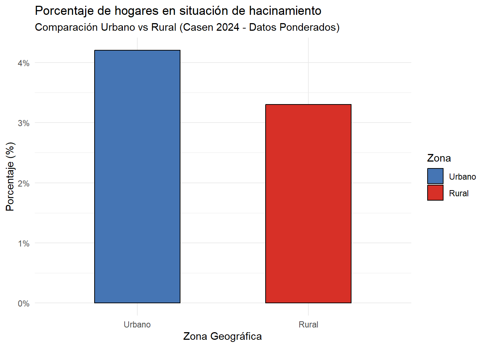
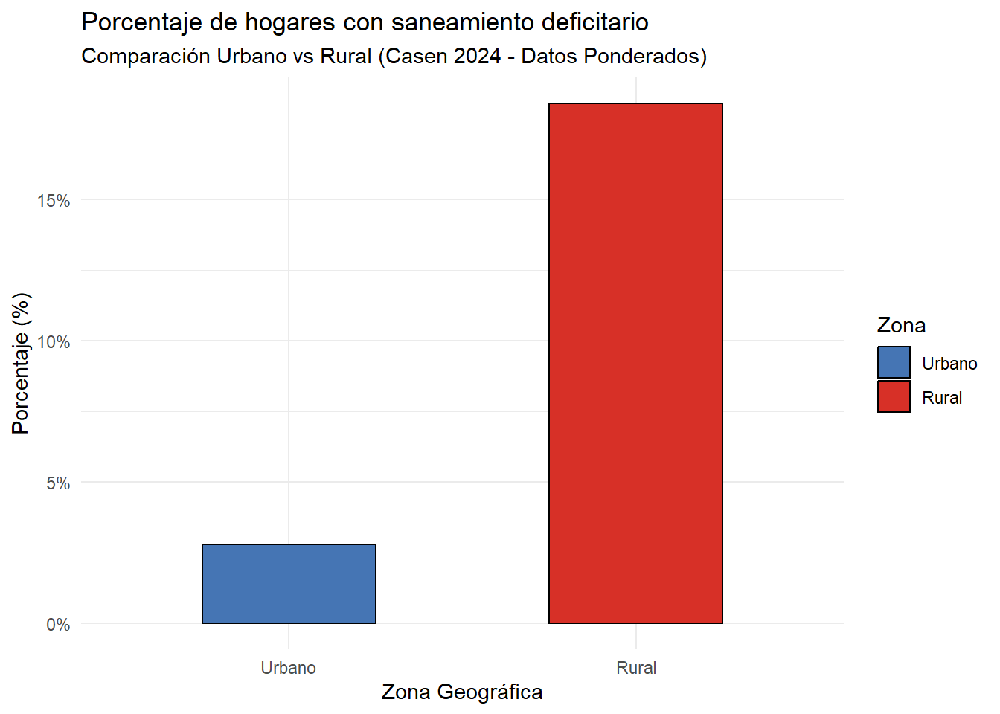
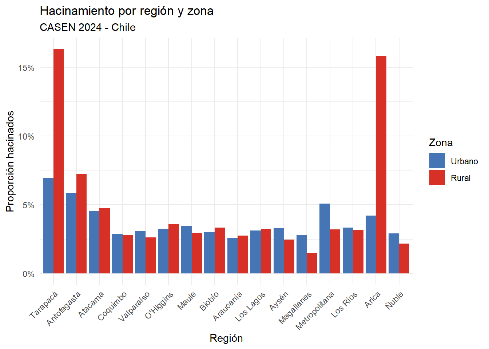
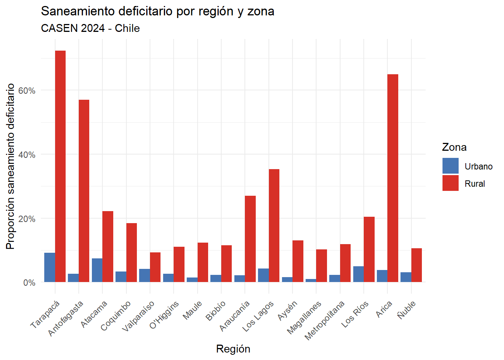

6 Resultados
Los análisis descriptivos realizados permitieron caracterizar la situación de hacinamiento y saneamiento tanto en las zonas rurales como en las zonas urbanas; asimismo, los resultados permitieron contrastar las hipótesis anteriormente registradas.
Respecto de la situación de hacinamiento (H1), para evaluar la situación según la zona de residencia, se realizó una prueba de Chi cuadrado junto una regresión logística, utilizando las variables de hacinamiento y zona (es decir, rural o urbana). Los resultados de las pruebas arrojaron que el porcentaje de hacinamiento en las zonas urbanas es de 4,2%, mientras que en la zona rural es de 3,3%, todo esto con una diferencia estadísticamente significativa (p = 0,0006). A su vez el análisis de regresión logística muestra que los hogares rurales tienen un 22% menos probabilidad de estar hacinados que los hogares urbanos (OR = 0,78). Por tanto, la hipótesis que planteaba que el hacinamiento sería mayor en zonas rurales que en zonas urbanas, se rechaza.
A continuación se presenta el gráfico con los resultados:
La metodología utilizada para contrastar la hipótesis de saneamiento (H2) fue exactamente la misma, en ese sentido, los resultados indicaron que mientras en las zonas urbanas el saneamiento deficitario es de 2,8%, en las zonas rurales este alcanza un 18,4%, por lo que los hogares rurales tiene una probabilidad casi ocho veces mayor de vivir en estas condiciones. Dichos resultados permiten confirmar la hipótesis de que el acceso a saneamiento adecuado es menor en zonas rurales que en las zonas urbanas.
A continuación se presenta el gráfico con los resultados:

Sobre los alcances del presente proyecto, este permite caracterizar la situación de hacinamiento y saneamiento a nivel nacional, distinguiendo entre zonas rurales y urbanas mediante el uso de datos recientes y atingentes a la problemática. En ese sentido, cabe precisar que las hipótesis registradas consideran únicamente el desglose urbano-rural; no obstante, con el fin de enriquecer el estudio, se incorporó un análisis exploratorio a nivel regional. Este último apartado se plantea sólo como un complemento para la discusión, ya que no formaba parte del registro inicial, pero se considera que su inclusión permite evaluar si las brechas urbano-rurales son homogéneas en todo el país o si varían según la región, fortaleciendo así las discusiones del proyecto.
En ese sentido, el análisis exploratorio arrojó que las diferencias en hacinamiento entre zonas urbanas y rurales son pequeñas y poco consistentes a lo largo del país, lo que es coherente con los hallazgos de la hipótesis 1. Cabe señalar que las regiones que arrojan una mayor crisis de hacinamiento corresponden a la Región de Arica y Parinacota y la de Tarapacá, lo que podría atribuirse al alto flujo migratorio de aquellas regiones. Respecto del análisis de saneamiento por región, este arrojó diferencias más latentes, debido a que regiones del sur como La Araucanía o Los Ríos presentan un mayor déficit de saneamiento que regiones mayormente urbanizadas, como la Región Metropolitana. Por lo que, tal como se presenta en los gráficos anteriores, es posible destacar que las diferencias entre el hacinamiento y el acceso a saneamiento adecuado, no son homogéneas a lo largo de todas las regiones.
A continuación se presentan los gráficos con los resultados del análisis exploratorio por región:


Para finalizar este apartado de resultados, es posible señalar que dentro de los límites del proyecto se encuentra que los índices de hacinamiento y saneamiento poseen categorías de respuesta bastante generales; en ese sentido, hacinamiento solo se mide en términos de cantidad de personas que habitan una vivienda, mientras que saneamiento solo considera si dichas condiciones son aceptables o deficitarias, ignorando un análisis más profundo de la problemática. Pese a ello, los índices son útiles para medir la problemática de manera general.